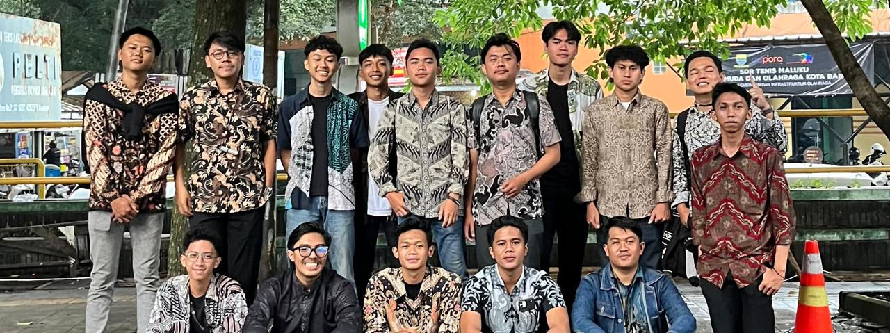
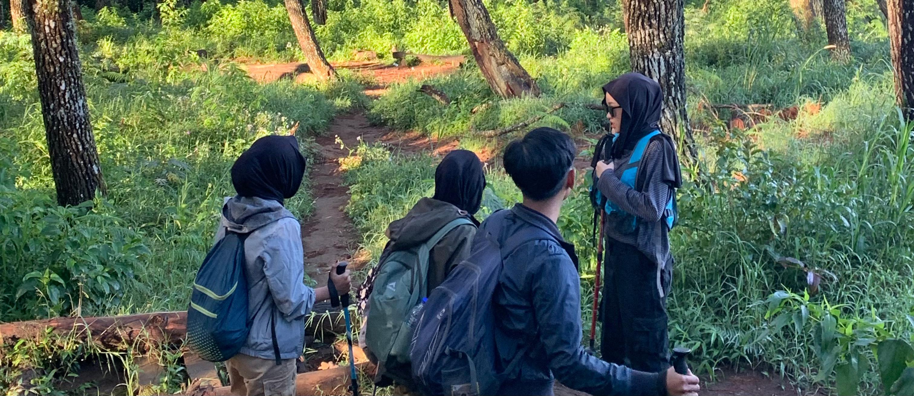

About Me
Hallo saya Nevalga Algasha Anandria Saputra bisa di panggil nepal saya merupakan mahasiswa dari Telkom University jurusan D3 Teknologi Telekomunikasi, saya juga mengikuti organisasi diluar kampus yaitu SobattBerbagii, dalam komunitas ini saya mendapat bagian di bidang kewirausahaan dalam komunitas ini kita berfokus pada kemanusiaan karena kita akan berbagi kepada orang yang membutuhkan dan juga kita membuat acara untuk anak-anak panti. Saya merupakan lulusan SMK Telkom Bandung jurusan Teknik Jaringan Akses Telekomunikasi Dengan itu saya mempunyai dasar dasar dalam bidang Telekomunikasi.
Technical Skills
Splicing Fiber Optik
12 core, 32 core
Drive Test
Pengukuran Sinyal Pada BTS
Editing Vidio
Alight Motion
Activities

SobattBerbagii
Humanity.

Hiking
Nature.